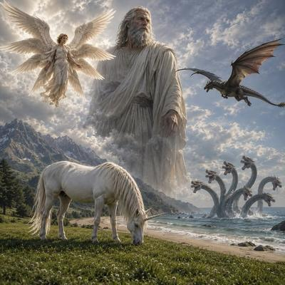

Miles de millones de creyentes han repetido durante siglos que la Biblia es «la palabra perfecta e inspirada de Dios». Una obra supuestamente redactada y dictada por el creador del universo, dueño de las galaxias, de los agujeros negros y de las constantes físicas fundamentales. Pero cuando uno abre el libro con pensamiento crítico —y no con el filtro devocional de la catequesis— lo que descubre es un texto impregnado de la mitología, cosmología y supersticiones del antiguo Oriente Próximo.


Y en ese contexto encontramos ahí unicornios, dragones, monstruos marinos de múltiples cabezas, serpientes cósmicas, seres antropomórficos híbridos, y hasta criaturas gigantescas dignas de una mitología babilónica. Aunque, cuando la ciencia comenzó a volver incómodas ciertas partes del texto, los editores bíblicos modernos hicieron lo que mejor saben hacer cuando la realidad les incomoda: reinterpretar, alegorizar… y cambiar traducciones.
Uno de los casos más embarazosos es el de los unicornios. En varias traducciones antiguas de la Biblia, especialmente la versión inglesa King James Version y la Reina-Valera 1909, aparece clara y repetidamente la palabra «unicornio». Un término proveniente del hebreo re’em (רְאֵם), traducido en la Septuaginta griega como monokeros («de un solo cuerno»). Y de esa forma, los cristianos leyeron durante siglos muy tranquilos, que los unicornios existían realmente.
Algunos versículos famosos son:
Libro de Job 39:9: «¿Querrá el unicornio servirte a ti…?»
Libro de los Salmos 29:6: «Los hizo saltar… como polluelos de unicornios.»
Libro de Números 23:22: «Tiene fuerzas como de unicornio.»
Pero no son los únicos. También aparecen unicornios en Deuteronomio 33:17, Salmos 22:21, Salmos 92:10, Números 24:8, Isaías 34:7.
Durante siglos nadie pareció escandalizarse demasiado. Después de todo, el mundo antiguo estaba lleno de criaturas fantásticas. El problema vino cuando apareció algo muy incómodo para la religión: la zoología moderna. Fue entonces cuando los teólogos comenzaron a explicar que, en realidad, re’em hacía referencia probablemente al uro (Bos primigenius), un enorme toro salvaje ya extinto. Y de pronto, casi mágicamente, los unicornios comenzaron a desaparecer de las nuevas traducciones bíblicas. Versiones modernas como la Reina-Valera 1960 cambiaron «unicornio» por «búfalo», «toro salvaje» o «buey salvaje».
Por supuesto, resulta curioso que el «Dios» omnisciente del universo, aparentemente no pudo evitar que su mensaje inspirado confundiera durante siglos a millones de personas, haciéndolas creer que existían unicornios bíblicos. Pero la Biblia menciona también dragones. Numerosas veces aparece la palabra hebrea tannín, que puede significar serpiente monstruosa, criatura marina o dragón. Dependiendo de qué tan incómodo se sienta el traductor ese día. Versículos conocidos incluyen:
Isaías 27:1: «… y matará al dragón que está en el mar.»
Salmos 74:13: «Quebrantaste cabezas de dragones en las aguas.»
Apocalipsis 12:9: «Y fue lanzado fuera el gran dragón…»
Aunque hay muchos más: Jeremías 51:34, Ezequiel 29:3, Miqueas 1:8, Malaquías 1:3, Deuteronomio 32:33, Job 30:29.
Y ocurre aquí otro malabarismo teológico interesante: cuando la cultura moderna dejó de tomar en serio a los dragones, los comentaristas religiosos comenzaron a decir que eran sólo «símbolos», «metáforas del caos», «representaciones espirituales» o «lenguaje poético». ¡Qué conveniente! Cuando la criatura parece absurda, se vuelve alegórica. Pero cuando conviene doctrinalmente, todo debe interpretarse literalmente.
Y está el caso de Leviatán, el monstruo marino de Yahvé, que destaca entre las criaturas más impresionantes del imaginario bíblico. Y no es simplemente un cocodrilo grande, como intentan suavizar algunos apologistas modernos, desesperados por mantener algo de dignidad racional, el texto bíblico lo describe como una bestia marina monstruosa y prácticamente invencible. En Job 41, Leviatán tiene escamas impenetrables, provoca terror, hace hervir el mar, y hasta lanza fuego y humo por la boca. Es más parecido a un dragón mitológico mesopotámico, que a un reptil africano. Algunos versículos importantes son: Job 41:1-34, Salmos 104:26, Isaías 27:1. Pero aparece también en Salmos 74:14.
Los estudios comparativos muestran claras conexiones entre Leviatán y monstruos mitológicos marinos del antiguo Oriente Próximo, especialmente Lotan, la serpiente marina de la mitología cananea, que fue derrotada por el dios Baal. O sea, el supuesto libro revelado por el único «Dios» verdadero, heredó elementos mitológicos de pueblos vecinos paganos.
Y, claro, está también Behemot, la bestia gigante, otro personaje del zoológico bíblico. Que aparece principalmente en Job 40:15-24, donde se describe como una criatura gigantesca, cuya cola «se mueve como un cedro». Los apologistas modernos suelen decir que era un hipopótamo. El pequeño inconveniente es que la cola de un hipopótamo parece más un limpiador de tuberías que un cedro del Líbano. Por lo que otros sugieren que era un elefante, pero tampoco encaja. La explicación más razonable desde la antropología comparada, es mucho menos fantástica: Behemot es una criatura mitológica compuesta, nacida del imaginario simbólico del antiguo Oriente Próximo, donde las bestias colosales representaban fuerzas primordiales de la naturaleza y del caos.
Pero la Biblia tiene más seres mitológicos, está lejos de ser un texto «desmitologizado». Más bien está llena de criaturas fantásticas heredadas de culturas antiguas. Entre ellas las siguientes:
El monstruo Rahab, asociado al caos marino, en Isaías 51:9 y Job 26:12.
Asmodeo, el demonio presente en el Libro de Tobías.
Los Nephilim, gigantes híbridos de humanos y seres celestiales, de Génesis 6:4.
Los ángeles con aspecto aterrador y ruedas llenas de ojos del Libro de Ezequiel 1.
Los querubines, criaturas aladas híbridas con rasgos humanos y animales.
Los serafines del Libro de Isaías 6, seres de múltiples alas que flotan alrededor del trono divino.
Y tenemos además a la serpiente parlante del Edén en Génesis 3:1-14, la burra parlante de Balaam, que además sabía contar, del Libro de Números 22:21-28, y los árboles que votan por su rey en el libro de los Jueces 9:7-15.
En fin, si nos ponemos acuciosos, nos damos cuenta de que la Biblia es como un lugar lleno de seres extraños (por supuesto, inexistentes). Lo cual refleja un rasgo completamente humano: los antiguos hebreos compartían el mismo universo mental que otros pueblos de la región, por lo que creían en monstruos marinos, seres híbridos, demonios del desierto y batallas cósmicas entre fuerzas sobrenaturales. Eran esencialmente, personas dominadas por el pensamiento mágico-supersticioso. E igual eran los babilonios, asirios, cananeos y egipcios.
Esto no tiene por qué sorprendernos si vemos a la Biblia como un libro de mitología. El problema es cuando se considera la «palabra de Dios». Aparece entonces el gran dilema teológico, ya que, si la Biblia es un libro dictado por un ser omnisciente, ¿por qué contiene la misma clase de criaturas mitológicas y cosmologías primitivas que las culturas vecinas? ¿Y por qué necesita constantes correcciones e interpretaciones? ¿Por qué los traductores sienten la necesidad de reemplazar unicornios por búfalos, dragones por chacales y monstruos cósmicos por «metáforas poéticas»?
La respuesta antropológica es muy sencilla: porque la Biblia no cayó del cielo. Fue escrita por seres humanos antiguos, inmersos en las creencias, mitos y limitaciones intelectuales de su época. Y eso explica perfectamente por qué sus páginas parecen, por momentos, más cercanas a un bestiario mitológico oriental, que a una revelación sobrenatural del creador del cosmos.
[Godless Freeman]
Comentarios
Comments powered by Disqus